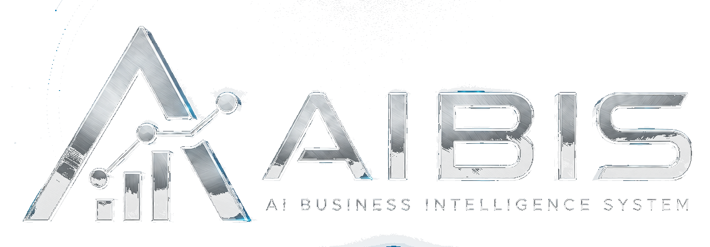
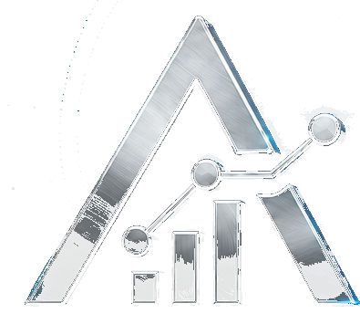
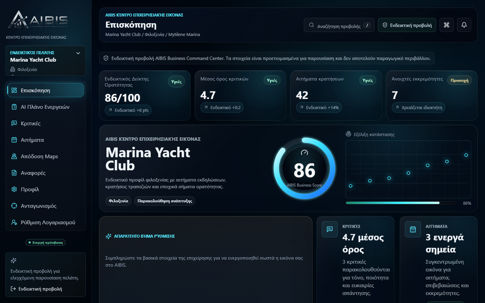
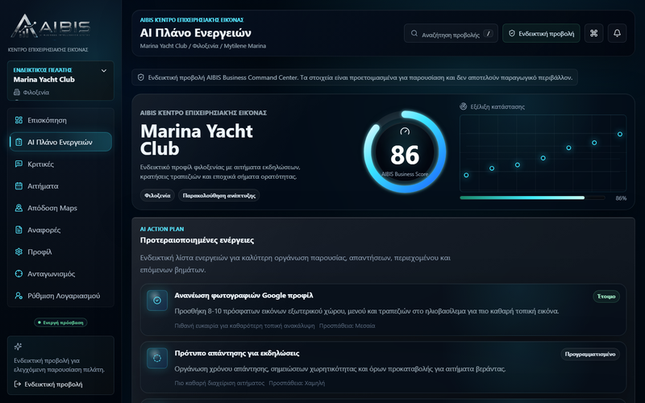
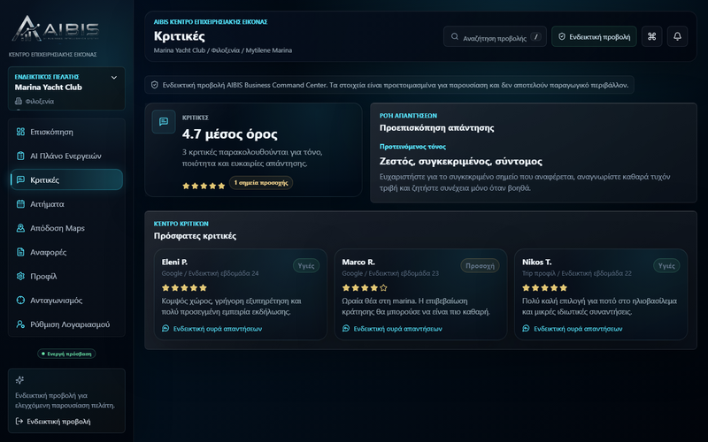
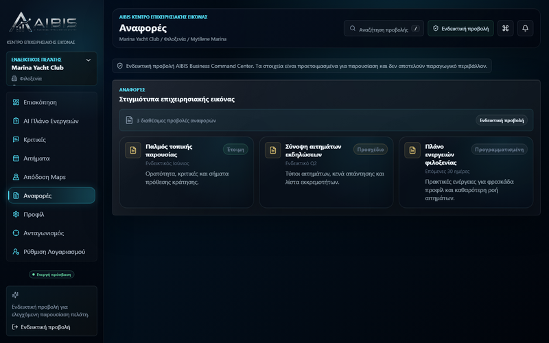

Αδύναμη Google εικόνα
Η πρώτη εντύπωση μπορεί να μην δείχνει την πραγματική αξία της επιχείρησης.

Initializing business intelligence scan

AIBIS Ζητήστε AI AuditAI Business Intelligence System · AI Business Command Center
Η AIBIS αναλύει Google εικόνα, κριτικές, website, social, leads και ροή επικοινωνίας και τα μετατρέπει σε πρακτικό action plan, reports και μηνιαία παρακολούθηση.
Πιο καθαρή online εικόνα
Καλύτερη αξιοποίηση κριτικών
Πιο άμεση ροή επικοινωνίας
Πρακτικές προτεραιότητες βελτίωσης
Problem diagnosis
Συχνά το πρόβλημα βρίσκεται στη συνολική online εικόνα: Google, κριτικές, social, website, μηνύματα, φόρμες και η διαδρομή που ακολουθεί ένας ενδιαφερόμενος πελάτης.
Η πρώτη εντύπωση μπορεί να μην δείχνει την πραγματική αξία της επιχείρησης.
Οι κριτικές υπάρχουν, αλλά δεν δουλεύουν πάντα ως ενεργό στοιχείο εμπιστοσύνης.
Ο επισκέπτης δεν οδηγείται άμεσα στο επόμενο πρακτικό βήμα.
Το ενδιαφέρον μένει στο feed αντί να μετατρέπεται σε επικοινωνία.
Οι ερωτήσεις και τα αιτήματα μπορεί να χάνονται χωρίς απλή καταγραφή.
Η επιχείρηση δεν ξέρει τι πρέπει να διορθώσει πρώτο.
AIBIS positioning
Η AIBIS δεν πουλά απλώς websites ή AI tools. Εντοπίζει πού χάνει πελάτες, χρόνο ή αξιοπιστία μια επιχείρηση online και προτείνει το κατάλληλο ψηφιακό σύστημα.
What AIBIS analyzes
Πώς εμφανίζεται η επιχείρηση όταν κάποιος την αναζητά και αν δημιουργεί εμπιστοσύνη.
Απαντήσεις, τόνος, αξιοποίηση και πιθανές ευκαιρίες εμπιστοσύνης.
Δομή, CTA, mobile εμπειρία και καθαρότητα στην επικοινωνία.
Αν το προφίλ οδηγεί κάπου ή απλώς δημοσιεύει περιεχόμενο.
Πού χάνεται η ερώτηση, το μήνυμα, η κράτηση ή το ενδιαφέρον.
Πού μπορεί να μειωθεί χειροκίνητη επανάληψη χωρίς να χαθεί ανθρώπινος έλεγχος.
Πακέτα & Υπηρεσίες
Οι τιμές είναι ενδεικτικές και προσαρμόζονται ανάλογα με τις ανάγκες και το τελικό scope. Δεν υπάρχει εγγύηση κρατήσεων, εσόδων ή κατάταξης στο Google. Για Custom Business Intelligence System, επικοινωνήστε μαζί μας.
Diagnostic dossier
Το demo δείχνει πώς η AIBIS μπορεί να μετατρέψει μια προκαταρκτική online εικόνα σε πρακτικό report ευκαιριών για premium hospitality χώρο.
Process
AIBIS Business Command Center
Η διάγνωση δεν μένει σε ένα PDF. Μετατρέπεται σε dashboard, προτεραιότητες, reports και μηνιαία παρακολούθηση.

Συνολική βαθμολογία online παρουσίας με τάση βελτίωσης.
Αυτόματες προτεραιότητες με βάση τα δεδομένα της επιχείρησης.
Google, reviews, website, leads, social — όλα σε ένα dashboard.
Reports με πρόοδο, συγκρίσεις και επόμενα βήματα.
Ανάθεση, παρακολούθηση και ολοκλήρωση ενεργειών βελτίωσης.



Το Command Center είναι διαθέσιμο σε demo / onboarding μορφή μέσω AIBIS Audit.
Contact
Μια σύντομη συζήτηση αρκεί για να δούμε αν υπάρχουν πρακτικά σημεία βελτίωσης στην online παρουσία, στην επικοινωνία ή στη μετατροπή ενδιαφέροντος σε πελάτες.